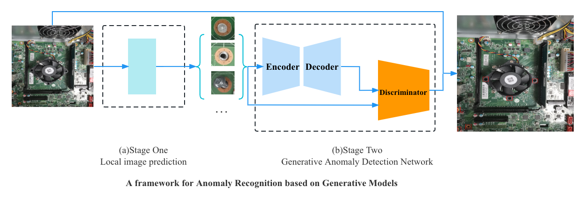

Mingyang Wu
吴明洋
About Me
Greetings! I am a fourth-year undergraduate majoring in Computer Science at Zhejiang University of Science and Technology (ZUST).
At present, I am conducting research as an undergraduate researcher under the guidance of Dr. Caie Xu at ZUST.
Notion Blogs / ZhiHu / Github
I am actively pursuing admission for a Master’s (MSc/Mphil) position in Fall 2024 and a Ph.D. position in Fall 2026!
Research Interests
My research interests are deep learning, machine learning, and their applications to computer vision. Specifically, I focus on:
- Generative AI (GANs) and its applications (e.g., unsupervised anomaly detection, image translation)
- Medical image enhancement and analysis
- 3D vision (e.g., 3D-aware image generation, object reconstruction/generation)
News
- [09. 2023] One paper has been accepted (JCR Q2).
- [01. 2023] Our paper Two-stage anomaly detection method was accepted to MTA (JCR Q2).
- [08. 2022] One paper has been accepted by APWeb/WAIM Workshops 2022.
Publications
-
Multimedia Tools and Applications

-
APWeb/WAIM Workshops 2022

Projects
-

National Undergraduate Innovation and Entrepreneurship Training Program 2022 -
University level Undergraduate Innovation and Entrepreneurship Training Program 2022
-
National Undergraduate Innovation and Entrepreneurship Training Program 2021
Awards
Honors
- National Scholarship in China (top 0.2%), 2022
- Zhejiang Provincial Government Scholarship (top 3%), 2021
- Merit Student Award (top 3%), ZUST, 2021, 2022
Training Programmes
- National Undergraduate Innovation and Entrepreneurship Training Program 2022
Project Leader - National Undergraduate Innovation and Entrepreneurship Training Program 2021
Competitions
- The 18th "Challenge Cup" Extracurricular Academic and Technological Works Competition for College Students in Zhejiang Province (Host), 2022
Invention Patents & Copyrights (Published Status)
Professional Activities
HKUST(GZ), RBCC, Summer Camp(2023.6-2023.7)
-
Award: Outstanding Campers
Teaching Assistant
- Assistant classroom teacher for freshmen @ ZUST, 2022-2023
Powered by Jekyll and Minimal Light theme.